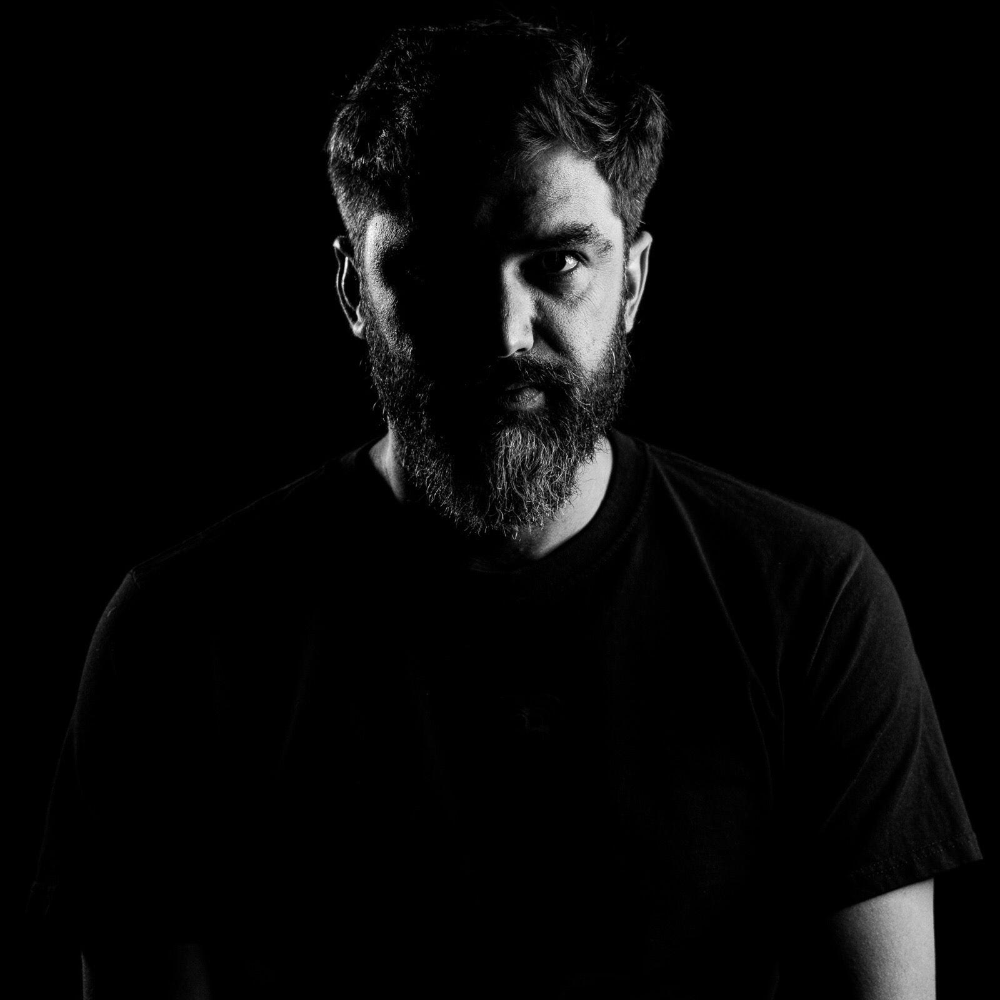

A lo largo de su carrera, ha sido seleccionado en diversos festivales internacionales, entre ellos Sound of Wander (Milán, 2015), Sirga Festival (Flix, España, 2016) y Laberintos Sonoros (Ciudad de México, 2017 y 2018). Asimismo, ha sido galardonado en distintas competencias de composición, como el Dvorak International Composition Competition (2013 y 2014), el Concurso Internacional de Composición del Museo del Quijote (2015) y el Bruno Maderna Composition Competition (2017). En 2024 y 2025 obtuvo mención honorífica en el Ise Shima International Composition Competition (Japón).
Su música ha sido interpretada por figuras y ensambles de relevancia, como Julián Martínez con la Orquesta de Cámara Michoacana y Versus 8, quienes estrenaron la obra “El sueño de la Mujer Pájaro” en el 46 Foro de Música Nueva Manuel Enríquez, en el Conservatorio de las Rosas, Morelia, México. En 2022, su proyecto audiovisual “IN PSOFOS” fue estrenado en Madrid, España, como una colaboración multidisciplinaria que reunió a jóvenes artistas mexicanos, a Zarahlena Frohwitter y al ENESSIMA ENSEMBLE, reafirmando su interés en la creación de experiencias artísticas inmersivas.
Actualmente, Miguel Ángel Rivera Bénard se desempeña como maestro titular en el curso de Titulación en Composición en NICO (Núcleo Integral de Composición), así como Composición en el CIEM (Centro de Investigación y Estudios de la Música) donde acompaña a nuevas generaciones de músicos en su proceso de formación y creación sonora. Recientemente ha sido ganador de la comisión de obra 2026 por la iniciativa 433 (cuartro treinta y tres), actual exponente de la música nueva.